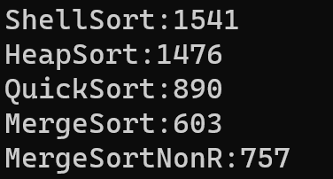
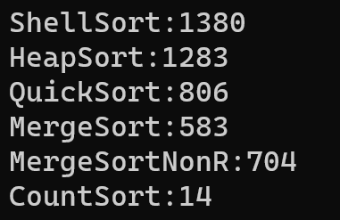
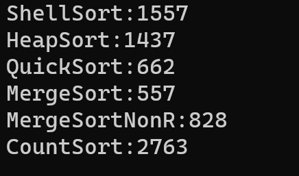
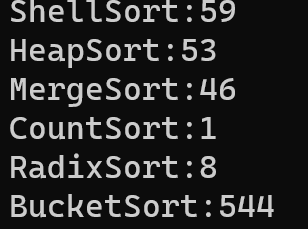
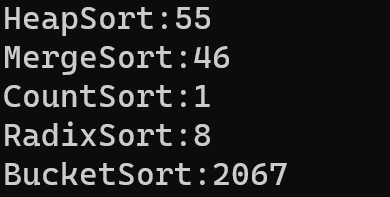
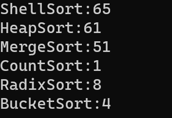
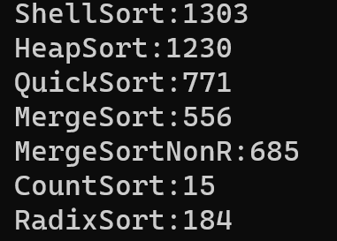
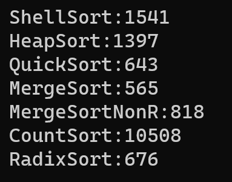

该系列为本人的学习笔记，主要由本人整理书写而成。部分内容来自教材、视频课程等，不能保证完全原创性。
萌新的学习笔记，写错了恳请斧正。
# 四、归并排序

归并排序是一种非常高效的排序算法。基本思想是将一个大数组分成两半，分别对这两半进行排序，然后将排序好的两部分合并在一起。这个过程递归进行，每次将数组分半，直到每个部分只有一个元素，自然是有序的，最终得到一个完整的有序数组。
归并排序的步骤如下：
- 分割：把当前序列平均分割成两半。
- 递归排序：递归地对这两半进行归并排序，直到分割的子序列只包含一个元素。
- 合并：将两个有序的子序列合并成一个有序序列。
# 时间复杂度
归并排序的时间复杂度为，在最好最坏情况都是如此。是一种效率稳定的排序方法。
# 实现
# 递归实现
void _MergeSort(int* arr, int left, int right, int* tmp) | |
{ | |
if (left >= right) | |
{ | |
return; | |
} | |
int mid = (left + right) / 2; | |
//[left, mid] [mid + 1, right] | |
_MergeSort(arr, left, mid, tmp); | |
_MergeSort(arr, mid + 1, right, tmp); | |
// 合并 | |
int begin1 = left, end1 = mid; | |
int begin2 = mid + 1, end2 = right; | |
int index = left; | |
while (begin1 <= end1 && begin2 <= end2) | |
{ | |
if (arr[begin1] < arr[begin2]) | |
{ | |
tmp[index++] = arr[begin1++]; | |
} | |
else | |
{ | |
tmp[index++] = arr[begin2++]; | |
} | |
} | |
while (begin1 <= end1) | |
{ | |
tmp[index++] = arr[begin1++]; | |
} | |
while (begin2 <= end2) | |
{ | |
tmp[index++] = arr[begin2++]; | |
} | |
memcpy(arr + left, tmp + left, sizeof(int) * (right - left + 1)); | |
} | |
void MergeSort(int* arr, int n) | |
{ | |
int* tmp = (int*)malloc(sizeof(int) * n); | |
if (tmp == NULL) | |
{ | |
perror("malloc"); | |
return; | |
} | |
_MergeSort(arr, 0, n - 1, tmp); | |
free(tmp); | |
tmp = NULL; | |
} |
# 非递归实现
同样的，归并排序的递归也可以整合为非递归的形式：
void MergeSortNonR(int* arr, int n) | |
{ | |
int* tmp = (int*)malloc(n * sizeof(int)); | |
if (tmp == NULL) | |
{ | |
perror("malloc fail"); | |
return; | |
} | |
for (int gap = 1; gap < n; gap *= 2) | |
{ | |
for (int j = 0; j < n; j += 2 * gap) | |
{ | |
int begin1 = j, end1 = begin1 + gap - 1; | |
int begin2 = begin1 + gap, end2 = begin2 + gap - 1; | |
if (end1 >= n || begin2 >= n) | |
{ | |
break; | |
} | |
if (end2 >= n) | |
{ | |
end2 = n - 1; | |
} | |
int i = j; | |
while (begin1 <= end1 && begin2 <= end2) | |
{ | |
if (arr[begin1] < arr[begin2]) | |
{ | |
tmp[i++] = arr[begin1++]; | |
} | |
else | |
{ | |
tmp[i++] = arr[begin2++]; | |
} | |
} | |
while (begin1 <= end1) | |
{ | |
tmp[i++] = arr[begin1++]; | |
} | |
while (begin2 <= end2) | |
{ | |
tmp[i++] = arr[begin2++]; | |
} | |
memcpy(arr + j, tmp + j, sizeof(int) * (end2 - j + 1)); // 用 j 不用 begin1，begin1 已经改变 | |
} | |
} | |
free(tmp); | |
tmp = NULL; | |
} |
# 测试
下面是对一千万个随机数据的排序测试

# 稳定性
归并排序是稳定的。
# 五、非比较排序
非比较排序不通过直接比较元素之间的大小关系来排序，而是利用其他方法，如数字或者字符串的特性。
非比较排序往往能达到非常非常高的时间效率，但是也往往受到非常大的使用限制。
# 5.1 计数排序
计数排序使用一个额外的数组来记录每个值的出现次数，然后根据这些计数来组织输出排序结果。
计数排序的步骤：
- 找出待排序数组中的最大值和最小值，确定计数数组的长度。
- 创建并初始化计数数组，索引代表原数组中的元素，值代表该元素出现的次数。
- 遍历原数组，更新计数数组：对于原数组中的每一个元素，将计数数组对应索引的值增加 1。
- 根据计数数组，重构原数组：遍历计数数组，根据每个索引的计数，在原数组中按顺序填充相应的元素。
# 时间复杂度
计数排序的时间复杂度是，其中 K 是数组中数据跨度的范围大小（比方说一个数组中所有数据都是 1，那这个跨度就是 1，如果里面有一个 1 变成了 100 万，那 K 就直接变成了 100 万）。
所以说，如果数据跨度比较小，计数排序的时间复杂度就可以认为是，其效率非常离谱。
# 实现
void CountSort(int* arr, int n) | |
{ | |
int max = arr[0]; | |
int min = arr[0]; | |
for (int i = 1; i < n; ++i) | |
{ | |
if (arr[i] > max) | |
{ | |
max = arr[i]; | |
} | |
if (arr[i] < min) | |
{ | |
min = arr[i]; | |
} | |
} | |
int range = max - min + 1; | |
int* count = (int*)malloc(sizeof(int) * range); | |
if (count == NULL) | |
{ | |
perror("malloc"); | |
return; | |
} | |
memset(count, 0, sizeof(int) * range); | |
for (int i = 0; i < n; ++i) | |
{ | |
count[arr[i] - min]++; | |
} | |
int index = 0; | |
for (int i = 0; i < range; ++i) | |
{ | |
while (count[i]--) | |
{ | |
arr[index++] = i + min; | |
} | |
} | |
free(count); | |
count = NULL; | |
} |
# 测试
下面是对一千万个随机数据的排序测试（数据在 0 到 32767）：

下面是对一千万个随机数据的排序测试（数据在 0 到十亿）：

# 局限性
就像上面所说，计数排序只有在数据跨度较小时能够获得极高的时间效率。而且计数排序只能用于排序整型数据。另外，其空间复杂度较高。
# 5.2 桶排序
注意：桶排序效率高的离谱，局限性也高的离谱，如果还是随便生成大量数据测试可能导致程序崩溃甚至电脑卡死！
桶排序是基于基数排序和分布的一种排序算法。其基本思想是将一个区间内的数据分散到多个有序的桶中，然后分别对每个桶中的元素进行排序，最后将各个桶中的元素按顺序合并，从而得到一个完全有序的数组。
桶排序的步骤描述起来较难理解，下面在代码部分详细解释。
# 时间复杂度
桶排序时间复杂度最低可达，非常高。但是但凡数据跨度比较大、bucketsize（下面会解释是什么）选取的函数不那么合适，就会导致时间和空间复杂度剧烈变化，可能直接造成代码崩溃。
# 实现
void BucketSort(int* arr, int n) | |
{ | |
int max = arr[0]; | |
int min = arr[0]; | |
for (int i = 1; i < n; ++i) | |
{ | |
if (arr[i] > max) | |
{ | |
max = arr[i]; | |
} | |
if (arr[i] < min) | |
{ | |
min = arr[i]; | |
} | |
} | |
int range = max - min + 1; | |
int bucketSize = 5; // 这里对不同的情形需要设置不同的数字，效率差距非常大 | |
int bucketCount = range / bucketSize + 1; | |
int** bucket = (int**)malloc(sizeof(int*) * bucketCount); | |
for (int i = 0; i < bucketCount; ++i) | |
{ | |
bucket[i] = (int*)malloc(sizeof(int) * n); | |
} | |
int* count = (int*)malloc(sizeof(int) * bucketCount); | |
memset(count, 0, sizeof(int) * bucketCount); | |
for (int i = 0; i < n; ++i) | |
{ | |
int index = (arr[i] - min) / bucketSize; | |
bucket[index][count[index]++] = arr[i]; | |
} | |
int index = 0; | |
for (int i = 0; i < bucketCount; ++i) | |
{ | |
InsertSort(bucket[i], count[i]); // 采用插入排序只是一种方法，这里不唯一 | |
for (int j = 0; j < count[i]; ++j) | |
{ | |
arr[index++] = bucket[i][j]; | |
} | |
} | |
for (int i = 0; i < bucketCount; ++i) | |
{ | |
free(bucket[i]); | |
} | |
free(bucket); | |
bucket = NULL; | |
free(count); | |
count = NULL; | |
} |
在上方实现中，我们首先确定了数据范围 range。
然后我们要根据 range 确定每一个桶内我们要存放范围大小为多少的数据，也就是 bucketSize。注意，这不是说每个 bucket 只能放 bucketSize 个数据，而是可以放多少值不同的数据（相同值可以无限叠放）。
随后我们就计算出了桶的数量 bucketCount，并且创建了这么多桶。同时每一个桶都配备了一个计数器（对应到 count 数组里）。
最后就是与计数排序类似的步骤，数据分桶再收集即可。
# 测试
100 万 0~99 的数据，bucketSize = 2：

100 万 0~99 的数据，bucketSize = 5：

100 万 0~99 的数据，bucketSize = 1：

# 5.3 基数排序

基数排序是对计数排序的一个升级方法。只要我们 == 把数组中的数从低位到高位逐次进行只看某一位的计数排序，最终就能得到有序的数组。== 这可能有些难以理解，但是我们可以看一个例子：
数组 =[170,45,75,90,802,24,2,66]
我们将按照十进制的个位、十位、百位等进行排序。这里最大的数字是 802，有三位数字，所以我们将进行三轮排序。
第一轮：按个位排序
- 170 的个位是 0
- 45 的个位是 5
- 75 的个位是 5
- 90 的个位是 0
- 802 的个位是 2
- 24 的个位是 4
- 2 的个位是 2
- 66 的个位是 6
按个位排序的结果为：170,90,802,2,24,45,75,66170,90,802,2,24,45,75,66
第二轮：按十位排序
- 170 的十位是 7
- 90 的十位是 9
- 802 的十位是 0
- 2 的十位是 0（没有十位，视为 0）
- 24 的十位是 2
- 45 的十位是 4
- 75 的十位是 7
- 66 的十位是 6
按十位排序的结果为：802,2,24,45,66,170,75,90802,2,24,45,66,170,75,90
第三轮：按百位排序
- 802 的百位是 8
- 2 的百位是 0（没有百位，视为 0）
- 24 的百位是 0
- 45 的百位是 0
- 66 的百位是 0
- 170 的百位是 1
- 75 的百位是 0
- 90 的百位是 0
按百位排序的结果为：2,24,45,66,75,90,170,8022,24,45,66,75,90,170,802
最终排序结果为：2,24,45,66,75,90,170,8022,24,45,66,75,90,170,802
# 时间复杂度
基数排序的时间复杂度仅为，非常高效。
# 实现
void RadixSort(int* arr, int n) | |
{ | |
int max = arr[0]; | |
for (int i = 1; i < n; ++i) | |
{ | |
if (arr[i] > max) | |
{ | |
max = arr[i]; | |
} | |
} | |
int maxDigit = 0; | |
while (max) | |
{ | |
max /= 10; | |
++maxDigit; | |
} | |
int* count = (int*)malloc(sizeof(int) * 10); | |
int* bucket = (int*)malloc(sizeof(int) * n); | |
int radix = 1; | |
for (int i = 0; i < maxDigit; ++i) //@ | |
{ | |
memset(count, 0, sizeof(int) * 10); | |
for (int j = 0; j < n; ++j) | |
{ | |
count[(arr[j] / radix) % 10]++; | |
} | |
for (int j = 1; j < 10; ++j) | |
{ | |
count[j] += count[j - 1]; | |
} | |
for (int j = n - 1; j >= 0; --j) | |
{ | |
bucket[--count[(arr[j] / radix) % 10]] = arr[j]; | |
} | |
memcpy(arr, bucket, sizeof(int) * n); | |
radix *= 10; | |
} | |
free(count); | |
count = NULL; | |
free(bucket); | |
bucket = NULL; | |
} |
对于上方 @标记的循环体中的 3 个子循环，这里需要给出一些解锁：
第一个 for 循环
循环遍历整个数组，计算当前位的数字（个位、十位、百位等），并对应的增加 count 数组中对应索引的值。这里 计算出当前位的值（如个位、十位等），count 数组用来记录每个数字（0-9）在当前位出现的次数。
第二个 for 循环
通过累加前一个索引的 count 值，将 count 数组转化为前缀和数组。这一步是为了在下一个循环中能够直接定位每个元素在 bucket 中的存放位置。每个元素的存放位置取决于它当前位的值，并使用前缀和确定其在 bucket 中的结束位置。
第三个 for 循环
从数组的最后一个元素开始向前遍历，这样可以保持排序的稳定性（即相同值的元素保持原有顺序）。通过查找当前位的数字对应的 count 数组值，确定元素在 bucket 中的位置（使用
--count是为了下次遇到同样的数时位置向前移动一个单位），然后将元素放在 bucket 中相应的位置。
# 测试
下面是对一千万个随机数据的排序测试（数据在 0 到 32767）：

下面是对一千万个随机数据的排序测试（数据在 0 到十亿）：

# 局限性
可以看到，基数排序一定程度上减除了计数排序对大范围数据处理的劣势，但是也增加了空间复杂度。与此同时，基数排序依旧保留了计数排序只能处理整数的缺点。